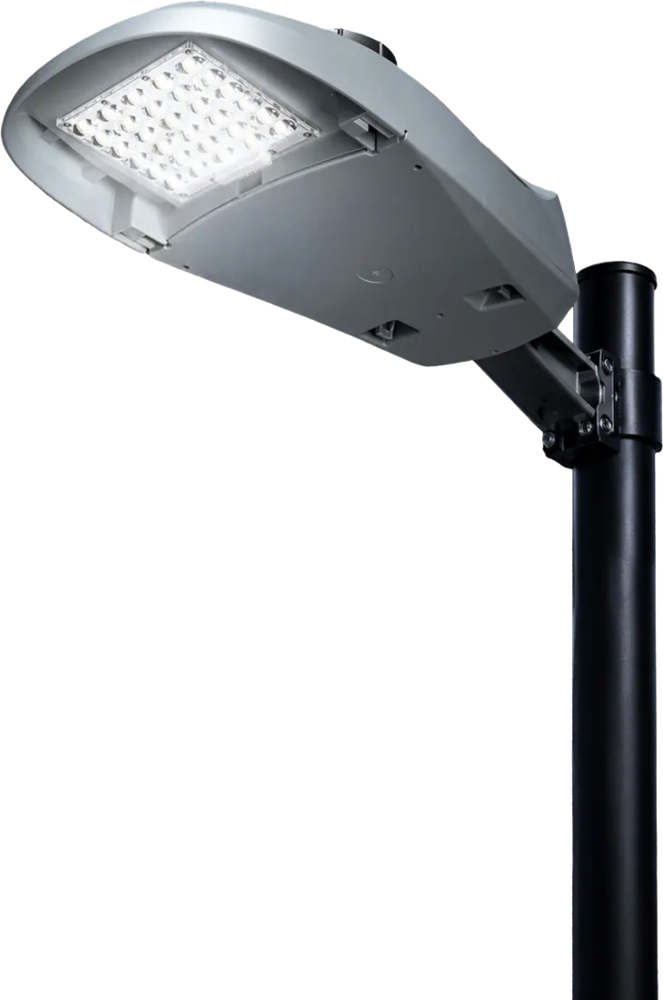

Luminaria vial
Green Cobra
34 – 200 Watts
Luminaria LED para avenidas, calles y vialidades. Pensada para proyectos de alumbrado público que buscan reducir el consumo de energía y mejorar la visibilidad nocturna.
- Flujo luminoso
- 4,800 a 35,600 lm
- Potencias
- 34 W a 200 W
- Protección
- IP66 · IK10
- Garantía
- 10 años
- Certificados
- PAESE · NOM-031 · NOM-003 · UL
- Aplicaciones
- Vialidades, parques, estacionamientos y zonas residenciales